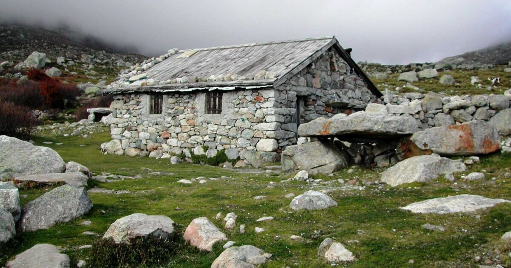
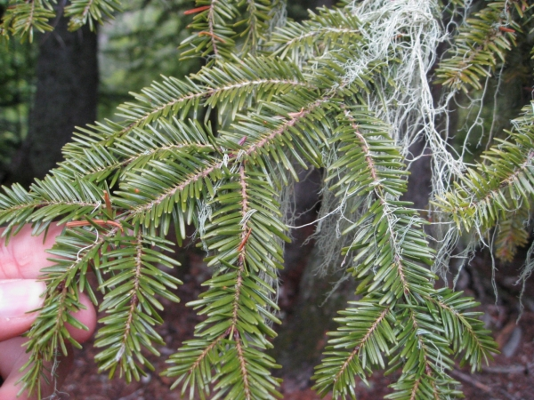

Les alentours :
Découvrez les merveilles naturelles et culturelles autour du gîte : montagnes, forêts, et villages pittoresques.
Les Bergeries des Pozzi :

Le sapin géant :

Découvrez les merveilles naturelles et culturelles autour du gîte : montagnes, forêts, et villages pittoresques.